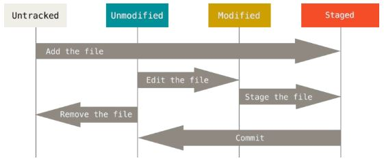
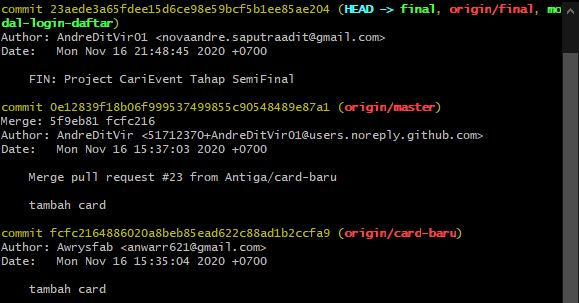
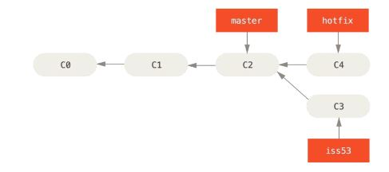
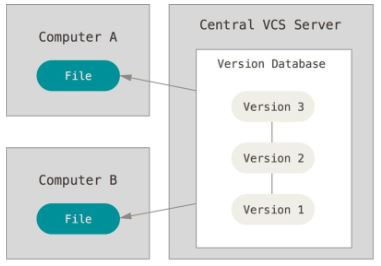

Git & Github

Bagi yang masih baru di dunia website, pastinya akan banyak melontarkan pertanyaan, dan salah satunya adalah ‘Apa itu GitHub?’. GitHub adalah manajemen proyek dan sistem versioning code sekaligus platform jaringan sosial yang dirancang khusus bagi para developer. Lalu, apa saja fungsi GitHub? Dengan platform ini, Anda bisa bekerja bersama-sama dengan rekan dari berbagai berlahan dunia, merencanakan proyek, dan bahkan tracking (melacak) pekerjaan Anda.
Version control system adalah salah satu kategori dalam tools perangkat lunak yang membantu software team dalam mengelola perubahan source code dari waktu ke waktu. Version control system melacak setiap perubahan pada kode yang bilamana terjadi kesalahan, sehingga developer dapat kembali pada perubahan sebelumnya untuk membandingkan kode dan memperbaiki kesalahan pada kode tersebut tanpa harus mengganggu team lain yang sedang bekerja dalam satu version control system.
Git merupakan layanan gratis dan open source version control system yang terdistribusi untuk mengatur segala sesuatu dari project kecil sampai project besar dengan mengandalkan kecepatan dan efisiensi.
Awalnya, kernel linux merupakan project open source yang cukup besar, awalnya hanya berupa patch dan berkas yang diarsipkan. Pada 2002 project linux mulai menggunakan DVCS berlisensi BitKeeper. Pada 2005 hubungan antara komunitas yang mengembangkan kernel Linux dan perusahaan komersial yang mengembangkan BitKeeper terputus dan status gratis dicabut. Hal ini mendesak komunitas pengembangan Linux (khususnya Linus Torvalds, pencipta Linux) untuk mengembangkan alat mereka sendiri (Git) berdasarkan beberapa pelajaran yang telah mereka pelajari ketika menggunakan BitKeeper. Sejak kelahirannya pada 2005, Git telah berevolusi dan berkembang untuk dapat digunakan dengan mudah. Git sangat cepat, sangat efisien dengan proyek-proyek besar dan Git memiliki sistem percabangan yang hebat untuk pengembangan non-linear.
Dasar - Dasar Git
Git hanya menyimpan `snapshot` bukan `setiap perubahan` pada project:Git hanya berpikir untuk menyimpan snapshot yang akan ditautkan ke file yang sudah tersimpan. Hampir setiap operasi berada di local:Git tidak perlu terhubung ke server untuk mendapatkan history dan menampilkannya cukup membaca langsung dari database lokal. Git memiliki integritas:Git akan melakukan pengecekan isi dari sebuah file, sehingga gitmengetahui semua file yang sudah dilakukan pengecekan. Git pada umumnya hanya menambahkan data: Setiap perubahan yang di commit pada sebuah file hanya akan menambahkan data ke database git (sulit untuk kehilangan data). Git memiliki tiga status: `committed` (data sudah tersimpan di database), `staged` (menandai pada file yang mengalami perubahan) dan `modified` (perubahan file belum ditandai)
Instalasi Git
Berkomunikasi dengan Git salah satunya adalah dengan command line. Command linesangatlah simple dan mudah, karena tidak perlu melakukan instalasi selain git untuk menjalankannya.
- Instalasi git pada Linux Fedora bisa menggunakan $ yum install git, sedangkan pada Linux Ubuntu bisa menggunakan >$ sudo apt-get install git.
- Instalasi git pada MacOS bisa menggunakan $ brew install git (pastikan sudah terinstal homebrew).
- Instalasi git pada Windows bisa dengan mendownload installer git pada laman installer.
Pastikan git sudah terinstal dengan menggunakan perintah
Pengaturan Awal
Sebaiknya melakukan beberapa konfigurasi sebelum menggunakan git di dalam project, hal ini akan tetap ada walaupun git melakukan update. Berikut konfigurasi awal di dalam git:
- Jalankan perintah >$ git config --global user.name “Your name”, contoh: $ git config --global user.name “Nova Andre Saputra”
- Jalankan perintah >$ git config --global user.email “Your email”, contoh: $ git config --global user.email “novaandre.saputraadit@mail.com”
- Jalankan perintah >$ git config --listuntuk melihat hasil konfigurasinya.
Repositori Git
Mendapatkan repository git di dalam project, bisa dengan menggunakan dua cara:
- >$ git inituntuk menginisialisasi repository git pada project, kemudian akan membuat folder `.git` yang berisikan semua file repository yang akan dibutuhkan git
- >$ git clone https://github.com/example/example-gituntuk menduplikasi repository yang sudah ada, pada perintah tersebut akan menduplikasi project sesuai dengan namanya dan di dalam project tersebut sudah terdapat folder `.git`.
Setiap file pada work directory berada pada dua status: ‘tracked’ atau ‘untracked’, tracked berarti file yang sudah berada di snapshot terakhir (unmodified, modified dan staged).

- >$ git statusuntuk melihat adakah perubahan pada work directory dan file yang berada di untracked dan tracked.
- >$ git add 'nama_file'untuk mengubah status file / direktori menjadi staged.
- Mengabaikan file atau direktori bilamana terdapat perubahan di dalamnya, buat filedengan nama `.gitignore` sebagai contoh tambahkan `*.log` dan `build/` untuk mengabaikan perubahan pada file dengan ekstensi log dan folder dengan nama build(termasuk didalamnya).
- >$ git commit -m “message”untuk memasukkan data snapshot ke dalam database git, ubah `message` dengan pesan sesuai kebutuhan, sebagai contoh `initial commit`.
Melihat riwayat commit pada suatu project bisa dengan menggunakan perintah

Selama proses pengerjaan project mungkin ada keinginan untuk mengulangi perubahan fileyang sudah di commit atau yang belum di commit, ada beberapa cara untuk mengulangi perubahan tersebut.
- >$ git commit --amend -m “message”untuk melakukan perubahan commit dan nama pesan.
- >$ git reset HEAD `filename`untuk menyetel ulang file tersebut (kembali ke untracked).
- >$ git checkout -- `filename`untuk menyetel ulang file pada commit sebelumnya.
Git mempunyai sebuah host untuk menyimpan perubahan di internet sehingga project bisa push dan pull, inilah yang disebut dengan remote. Penyedia layanan (remote) pada git ada GitHub, GitLab, BitBucket, dsb (setiap project bisa memiliki lebih dari satu remote).
- >$ git remote add origin https://github.com/example/example-gituntuk menambahkan remote.
- >$ git remote -vuntuk melihat daftar remote.
- >$ git fetch originuntuk mengambil semua informasi pada remote origin.
- >$ git pull origin masteruntuk menarik informasi dari remote origin.
- >$ git push origin masteruntuk mengirimkan perubahan ke remote.
- >$ git remote rename origin githubuntuk mengubah nama remote.
- >$ git remote rm githubuntuk menghapus remote berdasarkan nama remote.
Basic Branching
Branching (percabangan) mempunyai arti menyimpang dari jalur utama proses developmentdan terus melakukan pekerjaan tanpa mengganggu jalur utama. Branching merupakan fitur yang terbilang mahal karena seringkali mengharuskan untuk menyalin source code utama.

- >$ git branch devuntuk membuat branch dev dan>$ git checkout devuntuk berpindah ke branch dev atau dipersingkat dengan $ git checkout -b dev.
- >$ git merge hotfixuntuk menggabungkan branch sekarang dengan branch hotfix.
- >$ git branch -d devuntuk menghapus branch dev di lokal.
- >$ git push origin --alluntuk berbagi semua branch yang ada di lokal ke remote (biasanya dipakai waktu initial push ke remote).
Distributed Workflow
Hal ini membahas tentang bagaimana berkontribusi source code ke dalam projectdengan sukses, membuat semudah mungkin bagi kontributor dan pengelola project serta mengelola project secara sukses dengan banyak kontributor. Contoh ada dua orang kontributor di dalam project (Computer A dan B) sedang bekerja secara bersamaan. Computer A sudah melakukan push ke remote, maka Computer B harus melakukan rebasing sebelum push ke remote.

Setiap kontributor harus memastikan bahwa dia sedang mengerjakan project dengan source code yang terbaru dengan memakai
Github
GitHub adalah penyimpanan terbesar untuk repositori Git dan Github adalah pusat kolaborasi untuk pengembangan proyek. Sebagian besar dari semua repositori Git tersimpan di GitHub, dan banyak proyek open source menggunakan Github untuk menyimpan Git, memecahkan masalah, menyusun kode, dan hal-hal lainnya.Silahkan kunjungi https://github.com/ untuk melakukan pendaftaran github.
Generate Public SSH Key
Dengan SSH key, melakukan interaksi dengan GitHub tidak perlu memberikan username dan password untuk setiap kali interaksi. Langkah-langkah generate SSH Key:
- Buka terminal (untuk Windows buka git bash).
- Jalankan perintah >$ ssh-keygen -t rsa -b 4096 -C "your_email@example.com"pada terminal untuk generate SSH Key baru.
- > Generating public/private rsa key pair.
- > Enter a file in which to save the key (/home/you/.ssh/id_rsa): [Press enter]
- > Enter passphrase (empty for no passphrase): [Type a passphrase]
- > Enter same passphrase again: [Type passphrase again]
Menambahkan SSH Key kedalam account GitHub
- Login GitHub (jika belum login).
- Buka terminal dan jalankan perintah >$ cd .sshdan>$ cat [your file].pubkemudian copas isi dari file tersebut.
- Klik icon pada pojok kanan atas dan pilih Settings, kemudian pada menu disebelah kiri pilih SSH and GPG Keys. Click New SSH Key untuk menambahkan SSH key, isikan judul sesuai kebutuhan dan copas ke kolom Key isi dari file sebelumnya.
- Jalankan perintah >$ git clone git@github.com:example/example-git.gitpada terminal baru untuk memastikan bahwa SSH key sudah berjalan.
Cara kontribusi ke Dalam Suatu Proyek
Cara Berkontribusi pada project yang sudah ada di dalam GitHub.
- Forking project: Berkontribusi pada project yang sudah ada yang dimana membutuhkan akses untuk push, cara paling mudah adalah dengan fork dari project tersebut.
- Pull Request: Berkontribusi pada project yang sudah ada, namun membutuhkan reviewdari pemilik atau pengelola project tersebut.